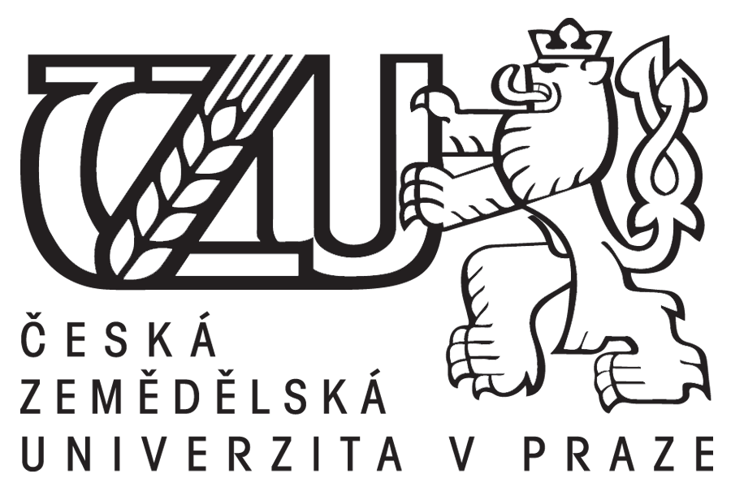

Bakalařská práce
Česká zemědělská univertiza, Provozně ekonomická fakulta Obor : INFO

(Nejen)Agilní metodiky vývoje software / Značkovací jaziky
Datum Vypracování : 18,04,2018
Jméno : Jan Pultzner
Popis práce: V této práci se podíváme na problematiky vývoje software, jaké problematiky existují, jejich výhody a nevýhody a obecné použití. Dále rozvedu metodologii
výběru nejlepší metodiky pro vývoje software pro daný projekt, nebo firemní organizaci.
Seznam metodik
| Název |
Metodika |
Zaměření |
Autor |
Rok |
| Scrum |
agilni |
Rychlost a komunikace |
Hirotaka Takeuchi and Ikujiro Nonaka |
1996 |
| SSADM |
strukturovana |
Organizace a dokumentace |
Central Computer and Telecommunications Agency |
1980 |
| XP |
agilni |
Rychlé dodání iterací |
Beckem |
1999 |
| DSDM |
agilni |
Minimalizace risku |
Office of Government Commerce - UK |
1994 |
| Vodopád |
strukturovana |
Organizace a kvalita iterací |
D.Bennington |
1983 |
Agilní metodiky
| Nazev |
Autor |
Rok |
Výhoda |
Nevyhoda |
pouziti |
Délka sprintů |
Tvoření dokumentace |
Hodnocení |
| Scrum |
Hirotaka Takeuchi and Ikujiro Nonaka |
1996 |
velmi rychlý feedback, velmi rychlé iterace |
Velký risk Scope Creep, nutnost zkušeností |
Malé firmy |
30 |
ne |
Ideální |
| Extreme programming |
Beckem |
1999 |
Jednoduchost, zaměření se na rychlé dodání iterace |
Nedostatečné zaměření na design, horší kvalita kodu |
Velké firmy |
80 |
ne |
Velmi uspokojivé |
| Dynamic systems development method |
Office of Government Commerce - UK |
1994 |
Prioritizace, minimalizace risku, maximalizace výhod |
Vyžaduje extenzivní zapojení zákazníka |
strední firmy |
20 |
ano |
mírně neuspokojivé |
Hodnocení Agilních systémů :56
Strukturované metodiky
| Nazev |
Autor |
Rok |
Výhoda |
Nevyhoda |
pouziti |
pocet_iteraci |
Délka sprintů |
Tvoření dokumentace |
Hodnocení |
| Structured systems analysis and design method |
Central Computer and Telecommunications Agency |
1980 |
Velmi dobrá analýza, Velká srozumitelnost |
Neflexibilní kontrola, zdlouhavé, drahé |
Velké firmy |
8 |
60 |
ano |
Průměrné |
| Waterfall |
D.Bennington |
1983 |
Jasně definovaný časový úsek, Disciplinovaná |
Získávání informace je riskantní, těžká změna |
Malé i velké firmy |
2 |
32 |
ano |
neuspokojivé |
Hodnocení Strukturovaných systémů : 18
Agilní metodiky vývoje softwaru jsou
Popis skupiny metod určených pro vyvíjení softwaru kde se dává na jevo iterativní a inkrementální vývoj
Hlavní výhody jsou :Rychlé dodávání softwaru
Hlavní priority jsou Zaměření na lidi a jejich spolupráci, rychlá reakce na změny
Styl plánování a implementace Iterativní
Průměrné náklady na zadevední agilních metodik je: 8000 kč
Styl vedení je : Decentralizované
Styl organizace : samoorganizované kč
Metodika je vhodná pro Malé a středně velké firmy a nevhodné pro Velé firmy
Lidé ji hodnotí jako Velmi populární
Byla použitá analíza MinMax
Maximální score pro tuto metodu je 32 a minimální score je 0
Firmy využívající agilní metodiky
Tricentis |
ThoughtWorks |
Sky |
CA Technologies |
Cognizant |
|
Použitá literatura
1 - http://blog.nny.cz/740763-klasicke-a-agilni-metodiky-vyvoje-software.php |
2 - https://www.360logica.com/blog/agile-development-advantages-disadvantages-and-when-to-use-it/ |
3 - https://www.smartsheet.com/agile-vs-scrum-vs-waterfall-vs-kanban |
4 - https://hygger.io/blog/agile-in-comparison-advantages-and-disadvantages/ |
Použité tabulky
1 - Seznam Metodik |
2 - Agilní metodiky |
3 - Strukturované metodiky |
Použité obrázky
1 - Logo - Čzu |